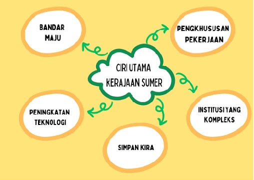
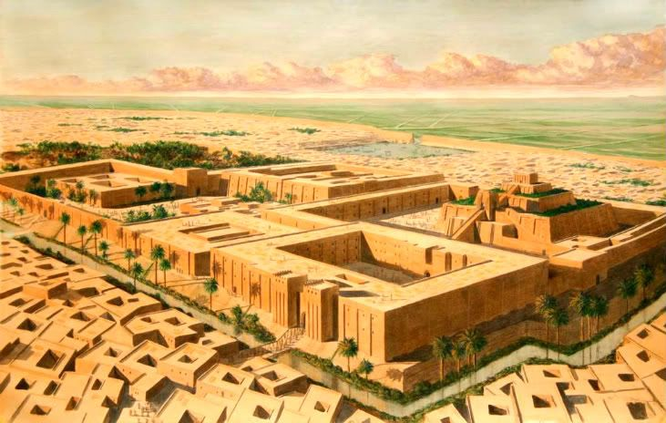
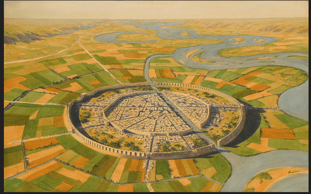

Mesopotamia
Tamadun Mesopotamia merupakan tamadun terawal dunia yang terletak di
barat daya Asia
Sungai Nil merupakan sungai terpanjang di dunia
Terdapat beberapa kerajaan dalam tamadun ini.Antaranya termasuklah
Sumeria, Babylon, Akkad, Chaldea dan Asyria
Kerajaan terawal ialah kerajaan Sumeria

Kerajaan terakhir ialah Chaldea
Bermula di wilayah selatan iaitu, Sumer
Orang Sumer
barat daya Asia
Sumeria, Babylon, Akkad, Chaldea dan Asyria
1)berhijrah ke wilayah ini
2)membina petempatan
3)menjalankan aktiviti
pertanian melalui kerja menebus guna tanah
4)membina sistem pengairan yang
membolehkan mereka mengawal pengaliran air sungai
5)berjaya membina
sistem perbandaran
Bulan Sabit Subur

terdapat kawasan subur yang
luas dalam oasis
yang dipanggil Bulan
Sabit Subur, iaitu terletak di antara Laut
Mediterranean dan Teluk Parsi
dibina daripada tanah liat yang dijadikan
bata
tempat ibadat dibina di setiap
pusat bandar
binaannya berbentuk
piramid yang dipanggil
zigurat
{kind=link}
Negara Kota Ur

berperanan
sebagai pusat perdagangan dan pelabuhan pusat perdagangan dan pelabuhan
Penduduknya berjumlah 30,000 orang.
Terletak
di Sungai Euphrates berhampiran Teluk Parsi, Ur
menjadi tempat pertemuan pedagang dari jauh
Petani menanam pokok gandum dan barli di luar kota Ur.
Bandar dipenuhi dengan rumah dan kedai.